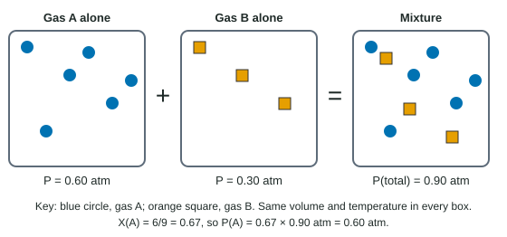

A party balloon shrinks in a cold car and swells in the sun. A bike tire that was firm in the evening feels soft on a frosty morning. A scuba tank holds an hour of air in a few liters. All of these follow one simple equation, because at ordinary conditions every gas behaves in almost the same way, whatever its molecules are.
The four variables of a gas
A sample of gas is described by four quantities: its pressure P, its volume V, its absolute temperature T, and the amount of gas n, in moles. They are linked by the ideal gas law:
PV = nRT
R is the gas constant. Its value depends on the units you use, and the equations sheet gives two:
- R = 0.08206 L·atm/(mol·K), when P is in atm and V in liters
- R = 8.314 J/(mol·K), when you work in SI units (pressure in pascals, volume in cubic meters), mostly for energy
Two rules prevent most mistakes. First, T must be in kelvin: K = °C + 273.15. A gas at 0 °C does not have zero volume; a gas at 0 K would. Second, match R to your units: convert pressure to atm (or use the R that fits) and volume to liters before substituting.
Solving for one variable
Worked example: moles in a tank. A 5.00 L steel tank holds oxygen at 12.5 atm and 22.0 °C. How many moles of O2 are in it, and what mass?
Step 1, temperature in kelvin. T = 22.0 + 273.15 = 295.15 K.
Step 2, rearrange. n = PV / RT.
Step 3, substitute with units. n = (12.5 atm × 5.00 L) / (0.08206 L·atm/(mol·K) × 295.15 K) = 62.5 L·atm / 24.220 L·atm/mol = 2.5805 mol. Every unit cancels except mol.
Step 4, round. Three significant figures (12.5, 5.00 and 22.0 each have three): 2.58 mol.
Step 5, mass. 2.5805 mol × 32.00 g/mol = 82.6 g.
Had you used 22.0 instead of 295.15 for T, you would have found 34.6 mol, more than thirteen times too much. Always convert first.
The same sample under new conditions
If a sealed sample changes from one set of conditions to another, n and R are constant, so PV/T stays the same. That gives the combined gas law:
P1V1 / T1 = P2V2 / T2
Hold any variable fixed and it drops out. At constant temperature, pressure and volume are inversely proportional (double the pressure, halve the volume). At constant pressure, volume is proportional to kelvin temperature. At constant volume, pressure is proportional to kelvin temperature. And at constant T and P, volume is proportional to moles: equal volumes of gases at the same conditions hold equal numbers of molecules.
Worked example: a balloon rises. A weather balloon holds 125 L of helium at 755 torr and 18 °C. It rises to where the pressure is 285 torr and the temperature is −35 °C. What is its new volume?
Step 1, kelvin. T1 = 18 + 273.15 = 291.15 K; T2 = −35 + 273.15 = 238.15 K.
Step 2, rearrange. V2 = V1 × (P1 / P2) × (T2 / T1). Pressure units cancel, so torr is fine here.
Step 3, substitute. V2 = 125 L × (755 / 285) × (238.15 / 291.15) = 125 L × 2.6491 × 0.81796 = 270.86 L.
Step 4, check and round. Lower pressure should make it bigger and colder air smaller; the pressure drop wins. 271 L.
Standard conditions and molar volume
STP (standard temperature and pressure) means 0 °C (273.15 K) and 1 atm. At STP, one mole of any ideal gas occupies V = nRT/P = (1 mol × 0.08206 × 273.15) / 1 = 22.4 L, the molar volume.
Molar mass and density from the gas law
Since n = mass / molar mass (n = m/M), the gas law can find a molar mass. Dividing both sides by V, it also links molar mass and density (d = m/V):
M = mRT / PV and M = dRT / P
Worked example: identifying a gas. A gas has a density of 1.25 g/L at 0.950 atm and 25.0 °C. What is its molar mass?
T = 25.0 + 273.15 = 298.15 K. M = dRT/P = (1.25 g/L × 0.08206 L·atm/(mol·K) × 298.15 K) / 0.950 atm = 30.583 / 0.950 = 32.2 g/mol. The gas is likely O2 (32.00 g/mol).
Mixtures of gases: partial pressures
In a mixture, each gas behaves as if it were alone in the container. The pressure it would exert alone is its partial pressure. Because the particles of different gases act independently, the partial pressures add (Figure 1):
Ptotal = PA + PB + PC + …

Each gas's share of the pressure equals its share of the molecules. That share is the mole fraction, XA = moles of A / total moles, and
PA = Ptotal × XA
Worked example: a gas mixture. A container holds 0.240 mol N2, 0.0600 mol O2 and 0.0200 mol CO2 at a total pressure of 1.60 atm. Find the partial pressure of O2.
Total moles = 0.240 + 0.0600 + 0.0200 = 0.320 mol. XO₂ = 0.0600 / 0.320 = 0.1875. PO₂ = 1.60 atm × 0.1875 = 0.300 atm. Check: PN₂ = 1.20 atm and PCO₂ = 0.100 atm, and 1.20 + 0.300 + 0.100 = 1.60 atm.